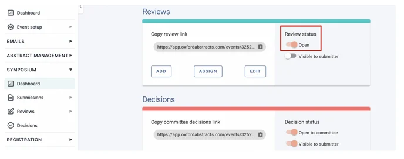
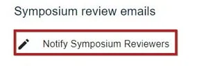
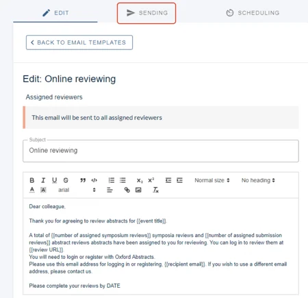
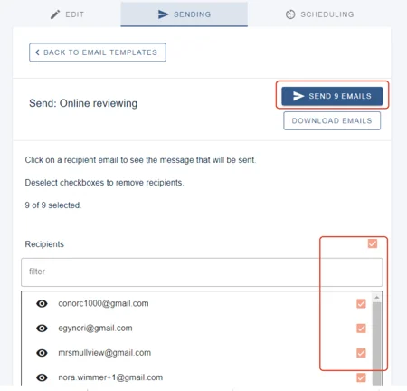
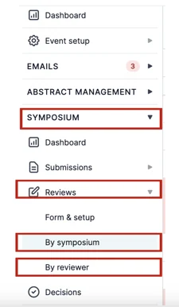
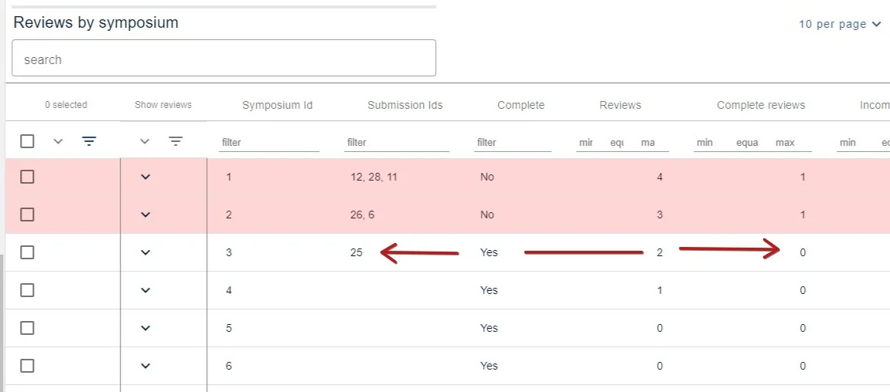
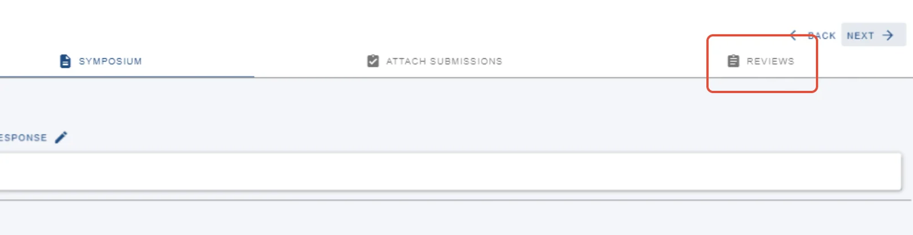
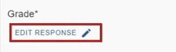
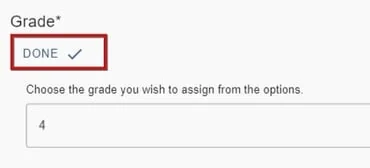

Symposia reviewing
For event organisersNot an organiser?
Reviewing symposia works much like reviewing abstracts , with one difference worth knowing up front: you cannot assign symposia by category.
It follows the order you will need it: assign, open, notify, then step in where a review needs finishing.
1. Assign reviewers#
Add your reviewers to the system first, via Manage users.
You can then assign symposia to reviewers, or reviewers to symposia, in the same way as assigning abstract reviews — go to Event dashboard → Symposium → Reviews**.
2. Open reviewing#
Go to Event dashboard → Symposium → Dashboard and scroll to the Reviews section. On the right you will see Review status** with an open/close toggle beneath it.

Click the toggle to open reviewing. It turns peach when open and grey when closed.
3. Notify your reviewers#
Go to Event dashboard → Emails → Edit & Send → Symposium. Scroll to Manually sent emails and, under the symposium review emails, click Notify symposium reviewers**.

Check the message and make any changes you need — they save automatically. For more on editing templates, see Amending template emails.
When you are ready, click Sending.

Tick individual recipients to send in batches, or tick the top box to select everyone, then click Send emails.

4. Edit a review, or complete one on behalf of a reviewer#
You can edit, complete or submit a review for an assigned reviewer — useful when someone drops out late.
Go to Event dashboard → Symposium → Reviews → By symposium or By reviewer**.

Rows with a pink background are incomplete. Click anywhere in the row you want.

Three tabs appear at the top — Symposium, Attach submission and Reviews. The symposium shows by default, so click Reviews.

Click Edit response on any question to change it.

Click Done when you have finished.

Next: Symposia decisions & emails.
Didn't solve it? Ask our support team
No question is too small, and there's no charge for asking. Raise a ticket and someone who knows the software will pick it up.
Did this page solve it?
Thanks — this helps us fix it.